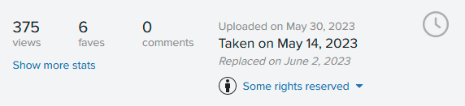

Congratulations!...
You have just installed or updated to Flickr Fixr version . If you have any open Flickr-pages already, you might need to reload pages to make install/update take effect on these.
If you are new to Flickr Fixr, make sure to look through features on the Options Page.
What's new in this version?!...
The most important news in this version of Flickr Fixr is how and what date/time information are shown on photopages. Flickr recently made some changes to photopages putting emphasizing on Upload date instead of the Taken date, which I found very confusing and illogical. So I made a fix for that! Also now, Flickr Fixr will sometimes add an extra "Replaced" date to the photopage.
Get the details in the Flickr Hacks forum!
Help, information, feedback?...
Visit the Flickr Fixr thread in Flickr Hacks forum. I regularly watch that thread for new comments.
I hope you enjoy Flickr even more with Flickr Fixr...
/Stig
PS. Also try xIFr, my EXIF-viewer for Firefox.